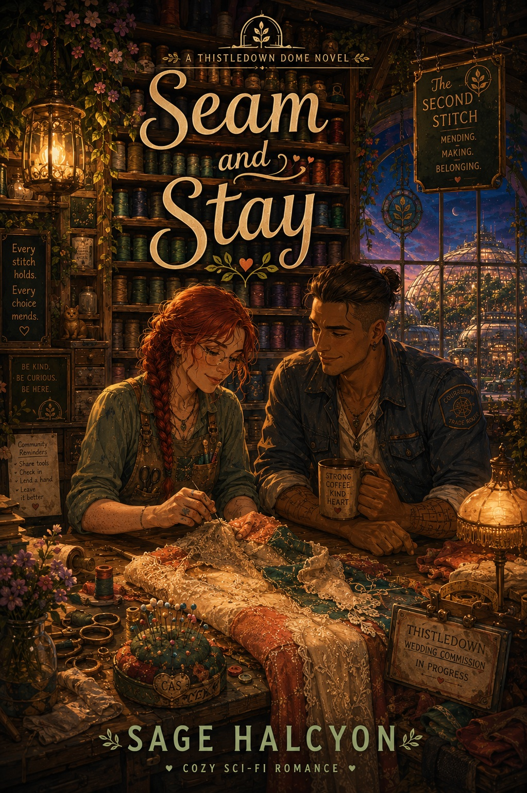

Visible mending and soft courage
A careful shop owner, a road-worn trader, a community wedding, and a romance about being chosen for more than what you can fix.
Thistledown · Book 6
A cozy sci-fi romance about visible mending, ruined wedding silk, trade-route debts, and learning that staying can be a choice instead of a trap.

Sparrow Ashdown has run Thistledown's mending shop alone for sixteen years, and she has never needed anyone to keep it that way. Then Cas Bellweather shows up at the dock with a wedding commission's worth of cornflower silk ruined in her care, and a debt to her trade guild she cannot talk her way out of.
Cas has eleven years of practice leaving before anyone can ask her to explain why she wants to stay. Salvaging the commission means working Sparrow's shop floor every day until the wedding deadline, and somewhere between the ruined bolts and the mended cuffs, staying stops feeling like a risk.
Then Cas's guild offers to forgive the debt for one thing: a permanent desk posting, off the road for good. Taking it means never finding out if staying was ever real. Refusing it means admitting, out loud, to wanting something she has never once let herself want.
Sparrow's grandmother taught her the shop's oldest rule: a repair begun by one hand should be finished by another.
A careful shop owner, a road-worn trader, a community wedding, and a romance about being chosen for more than what you can fix.
Seam and Stay stands alone, but it follows Strays and Other Miscalculations in the Thistledown release order.